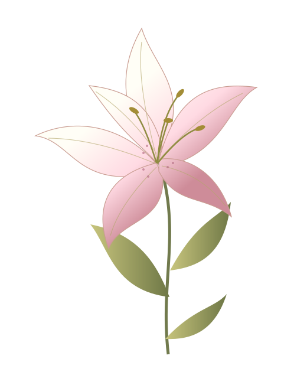

DATA ANALYST . BUSINESS INTELLIGENCE . BUSINESS ANALYST
Where data
Hello, I’m Dinda ✧
Where data
comes into bloom.
Master Computer Science Graduate
✳ Rooted in curiosity. Growing with data.
Dinda
YOUR PHOTO HERE
Ruang untuk potret personalmu

✧ ✦DATA ANALYTICS✳BUSINESS INTELLIGENCE✳DATA STORYTELLING✳ALWAYS GROWING✳
NOTES FROM MY GARDEN
 Curiosity is where it all begins.
Curiosity is where it all begins.
keepCuriosity is where it all begins.growing ↗
01 / A LITTLE ABOUT MEDiscovering what matters.
Discovering what matters.
Using data for good.
✳ Detail-oriented↗ Growth-minded♡ Thoughtful storyteller
Get to know my journey ↓02 / SOFT SKILLS & TECHNICAL SKILLSThe tools behind
The tools behind
the insights.
03 / THE JOURNEY SO FAREvery chapter,
Every chapter,
a little more growth.
01 Education
02 Professional Experiences
04 / SELECTED WORKA collection of
A collection of
data stories.
You can have data without information,
but you can't have information without data.
A DEEPER KIND OF CURIOSITY
02 / ENTRIESResearch Experiences.
05 / LET’S GROW SOMETHING GOOD✧
Good things start
with a conversation.
Punya pertanyaan, ide, atau peluang kolaborasi?
Mari mulai percakapan dan lihat apa yang bisa bertumbuh.